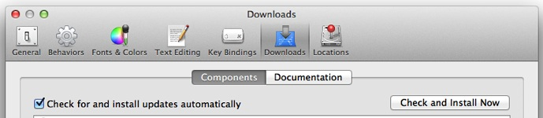

This installation document, created by Kevin Tyle, University of Albany, serves to guide users through building the latest version of GEMPAK on Intel Mac OS X 10.6 (Snow Leopard), 10.7 (Lion) , and 10.8 (Mountain Lion) with the GCC compilers, and should also work for 10.5 (Leopard). Earlier versions/CPUs of OS X are untested.
The following steps should lead to a successful build, with a user account with admin (sudo) privileges.
Xcode can be found as an optional install on the install DVD, or (again pre-Lion) you can download the latest disk image of Xcode from the Apple Developer web site (you will have to register in order to download the .dmg file): https://developer.apple.com/technologies/tools/xcode.html
Xcode can be downloaded from the Mac App Store, Command Line Tools are optional, so you must install it manually in the Preferencs tab:

Installing command line tools changes slightly than previous versions. You can install Command Line Tools stand alone with the following command:
sudo xcode-select --installand a popup window will appear asking you about install tools. Select Install and agree to the TOS. Finally, update all installed packages:
sudo port -v selfupdateMacPorts.org provides a DMG download for the 10.7, 10.8 and 10.9.
Add /opt/local/bin to the beginning of $PATH
Re-source your ~/.profile or ~/.cshrc
source .cshrcInstall the GNU gcc compiler suite. Look for the latest non-beta build (e.g., 4.9). This will take a long time, perhaps even a couple hours if you are on a slower/low-RAM system.
In order to compile GEMPAK you must install gcc.
sudo port install gcc49 gcc_select
sudo port select gcc mp-gcc49Install packages
sudo port install xorg-libXtst fontconfig jpeg libpng splint xbitmaps
sudo port install Xft2 xorg-libXp xorg-libXmu xpmInstalling fontconfig will also install freetype.
Installing Xft2 will also install xorg-renderproto and libXrender.
Installing xorg-libXp will also install xorg-printproto.
Installing xorg-libXmu will also install xorg-libXt, xorg-libsm and xorg-libice.
In the past (see below), OpenMotif was either not present on MacPorts, or it was necessary to build from source due to problems with the binary. This appears no longer to be the case; although for reference, the instructions for a source-code build of OpenMotif appear below. Note: the latest (2.3.4) version of OpenMotif has been problematic building from source, although the binaries work. You may wish to build the previous version, 2.3.3.
sudo port install openmotifIf that doesn't work, then:
The GEMPAK graphical programs, such as NMAP2 and NWX, require OpenMotif. This is no longer available from MacPorts, so you need to download and install OpenMotif 2.3.3. Unfortunately the OpenMotif source obtained from motifzone.net will produce compilation errors on OS X systems, so the UPC has provided the package with necessary edits in order to correctly build on your system.
Obtain the OpenMotif OS X specific tarball from the GEMPAK downloads page. Untar this in a directory of your choice. cd into it.
Set the CFLAGS and LDFLAGS environment variables:
export CFLAGS="-I/opt/local/include"; export LDFLAGS="-L/opt/local/lib" setenv CFLAGS -I/opt/local/include; setenv LDFLAGS -L/opt/local/libIn the top level of OpenMotif 2.3.3:
configure --prefix=/opt/local; make all
sudo make installExtract the GEMPAK tarball archive obtained from the GEMPAK Downloads page and modify Gemenviron or Gemenviron.profile depending on your shell so that the environmental variable $NAWIPS is set to the correct directory path. Then cd into the $NAWIPS directory (this is the parent directory of the GEMPAK/N-AWIPS directory tree).
Be sure you are cd'd into the top level GEMPAK6.10 directory at this time. Type
make > make.out to build the package, which may take a long time, depending on the speed of your computer. In a separate window, you can watch the compilation process by typing
tail -f make.outOnce done, verify there are no fatal errors in the make.out file (there should be two non-critical Error 2 messages but no Error 1 messages. If all went well, run
make installand you should be good-to-go.
No doubt some individuals with different CPUs/OS versions may discover some problems not mentioned or covered here. Although basic run-time testing on OS X-compiled GEMPAK has been successful, it's possible there may be bugs in the OS X build which are not seen on other platforms. Users can report known probelms to Unidata's GEMPAK Support desk (support-gempak@unidata.ucar.edu), and are encouraged to post updates and questions to the GEMBUD mailing list (gembud@unidata.ucar.edu) as well.
Corrections and comments concerning this guide can be sent to support-gempak@unidata.ucar.edu